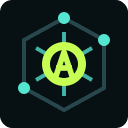
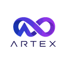

AI agent tools launched this week (Oct 26 – Nov 1, 2026), page 3
280 tools added Oct 26 – Nov 1, 2026. Page 3 of 3. Ranked by votes this week, then by the date added. Top: Code Mode, Cmux, CliniSearch.
Quick answer: The newest additions on this page are Code Mode, Cmux, CliniSearch. This page covers tools launched this week. Vote counts start at zero and come from the server, one vote per visitor per day. Ties stay in the order the tools were added, newest first.
New toolsSubmit freeFast-Track ($15)
Page 3 of 3Previous
- 201
 +0 todayView
+0 todayView - 202

Cmux
Open source Ghostty-based macOS terminal with vertical tabs and notifications for AI coding agents. Built for multitasking, organization, and programmability
More+0 todayView - 203
CliniSearch
CliniSearch lets UK clinicians search NICE, RCOG, and other clinical guidelines from one place and open the source.
More+0 todayView - 204

Clawd On Desk
A pixel desktop pet that watches Claude Code, Codex, Cursor & other AI coding agents — so you don't have to
More+0 todayView - 205
ClawRouter
The agent-native LLM router for autonomous agents. Every frontier model behind one wallet, <1ms local routing, USDC payments on Base & Solana via x402
More+0 todayView - 206

Claude Devtools
The missing DevTools for Claude Code — inspect session logs, tool calls, token usage, subagents, and context window in a visual UI. Free, open source
More+0 todayView - 207

Claude Code Tools
Practical productivity tools for Claude Code, Codex-CLI, and similar CLI coding agents
More+0 todayView - 208
Chemistry AI
Chemistry AI is a tutor that walks through concepts, equation balancing, and chemistry calculations
More+0 todayView - 209

Chat2DB
Chat2DB is a local-first database client where you ask questions in plain language and get SQL
More+0 todayView - 210

Chamelio
Chamelio reviews and negotiates contracts for in-house legal teams. It reviews contracts, policies, or compliance work and cites the source.
More+0 todayView - 211

Cc Safety Net
A pre-execution guard for AI coding agents. It blocks destructive Git and file system commands, plus common attempts to access sensitive files, before a tool call runs.
More+0 todayView - 212

Cc Haha
Claude Code / AI Agent ： Agent 、Git Worktree、 Diff、 、 、Computer Use、 ； 、 、 H5 。 Local-first Claude Code / AI Agent desktop workspace: multi-agent teams, Git worktrees, diffs, skills marketplace.
More+0 todayView - 213

Carbon
Open-source manufacturing ERP, MES and QMS. Quoting, MRP, inventory, shop floor, quality and lot/serial traceability on one Postgres schema, with a REST API and MCP server.
More+0 todayView - 214
Callsy
Callsy uses voice agents to recover abandoned carts on Shopify and WooCommerce. It helps a store answer shoppers, edit a catalog, or recover carts.
More+0 todayView - 215
CISO Assistant
CISO Assistant is an open GRC platform for risk, AppSec, compliance, and audit workflows
More+0 todayView - 216
 +0 todayView
+0 todayView - 217

BrowserKitten
Paw Work - selection-first web agent for Chrome: select on the live page, describe the outcome, take away an editable office file. BYOK, sandboxed, no server
More+0 todayView - 218
 +0 todayView
+0 todayView - 219

Botphonic
AI voice agents that answer, book and follow up on every business call. Under 300 ms latency, 50+ languages, HIPAA and PCI DSS ready
More+0 todayView - 220

Boss Agent CLI
Local-assist BOSS Zhipin CLI for AI agents — search, welfare filtering, shortlist, JSON-envelope output; low-risk & compliant by default
More+0 todayView - 221
BioMCP
BioMCP is a biomedical Model Context Protocol server for clinical trials, genomics, and literature
More+0 todayView - 222

Better Harness
An open-source Harness Engineering platform for coding agents—define harnesses as code, run controlled experiments, inspect evidence, and compare outcomes. Turn task evidence into actionable team and.
More+0 todayView - 223
BambooAI
BambooAI is a data-analyst agent that writes Python step by step and checks its own analysis
More+0 todayView - 224

Axonhub
Open-source AI Gateway — Use any SDK to call 100+ LLMs. Built-in failover, load balancing, cost control & end-to-end tracing
More+0 todayView - 225

Avora
Avora is a clinical documentation agent for dental practices that drafts notes and perio charts
More+0 todayView - 226+0 todayView
- 227
Aseprite AI Artist
MCP server and skills that let Claude Code, Codex, Gemini CLI or Cursor draw pixel art directly in the Aseprite window you have open, with a public gallery and a benchmark that scores dozens of models on the same.
More+0 todayView - 228

Ascendo
Ascendo deploys specialized physical AI agents for field-service teams. It connects an agent to robots, simulation, or physical-world control.
More+0 todayView - 229

Arkon
Arkon: Enterprise AI Knowledge Hub & MCP Server. Self-hosted knowledge base for teams to manage RAG contexts, access policies, and AI skills.
More+0 todayView - 230
Arcjet Js
Runtime security for AI apps and agents: prompt injection detection, tool-call authorization, sensitive-data redaction, bot protection, and rate limiting. Drop it into your JS/TS code
More+0 todayView - 231

Arbor
A generalist autonomous research agent — runs experiments, researches, and iteratively optimizes, autonomously
More+0 todayView - 232

Appsandbox
Easily create full virtual machines that are sandboxed for development or computer use models
More+0 todayView - 233
Anyquery
Anyquery is one SQL interface over 60 tools, and it plugs into an LLM or agent. It lets an agent query data and explain the result in plain language.
More+0 todayView - 234

Anymd
Any file → clean Markdown for AI agents: PDF, Word, PowerPoint, Excel, EPUB, HTML and web pages, images (OCR), audio and video (metadata, subtitles, transcripts). A fast Rust MCP server and CLI that runs on your machine.
More+0 todayView - 235

Anti Slop
Rules for an AI coding agent to filter out generic AI-generated UI designs, text, and code
More+0 todayView - 236

Anon
Anon is a product studio building production-worthy agents for enterprise deployments. We've mastered computer use across three product lines — each shipped to named enterprises
More+0 todayView - 237+0 todayView
- 238
Alpaca MCP Server
Alpaca’s official MCP Server lets you trade stocks, ETFs, crypto, and options, run data analysis, and build strategies in plain English directly from your favorite LLM tools and IDEs
More+0 todayView - 239

Airecon
AIRecon is an autonomous cybersecurity agent that combines a self-hosted Large Language Model (Ollama) with a Kali Linux Docker sandbox and a Textual TUI. It is designed to automate security.
More+0 todayView - 240
Ainisa
Ainisa is an AI receptionist for clinics that answers patient questions, books visits, and captures leads for the front desk.
More+0 todayView - 241
AiSOC
Open-source AI Security Operations Center: alert fusion, LLM-agent triage, MITRE ATT&CK investigation, and a replayable decision ledger for every agent step. Self-hostable, runs with no API keys, MIT licensed.
More+0 todayView - 242

Agtx
The blackboard for coding agents - agentic development environment for claude code, codex, cursor, opencode, grok and more
More+0 todayView - 243

Agmsg
Cross-vendor messaging for CLI AI coding agents — let Claude Code, Codex, Gemini & Copilot talk to each other in one team. Bash + SQLite, no daemon, no framework
More+0 todayView - 244
Agentshield
AI agent security scanner. Detect vulnerabilities in agent configurations, MCP servers, and tool permissions.
More+0 todayView - 245

Agentisexchange
Deploy AI agents with persistent memory and wallets in 3 lines of Python. Free to start.
More+0 todayView - 246

Agentic QE
Agentic QE Fleet is an open-source QA platform that works with coding agents to test software
More+0 todayView - 247

Agentic Coding Flywheel Setup
Bootstraps a fresh Ubuntu VPS into a complete multi-agent AI development environment in 30 minutes: coding agents, session management, safety tools, and coordination infrastructure
More+0 todayView - 248

Aegis
Make AI coding agents architecture-aware: baseline-first, evidence-verified, drift-checked, and safe across long tasks
More+0 todayView - 249

Adhd
ADHD — a skill for coding agents. Tree-of-thought with pruning, built on the Claude & Codex Agent SDK.
More+0 todayView - 250

ARTEX
ARTEX · AI autonomous penetration testing system (multi-agent LLM, Go + Next.js) · AI · agent+
More+0 todayView - 251
 +0 todayView
+0 todayView - 252

AIPex
AIPex: AI browser automation assistant, no migration and privacy first. Alternative to Manus Browser Operator、 Claude Chrome and Agent Browser
More+0 todayView - 253
AI Gateway
Labs to explore AI Models, MCP servers, and Agents with the AI Gateway powered by Azure API Management and Microsoft Foundry
More+0 todayView - 254

AI Engineer Headquarters
A collection of scientific methods, processes, algorithms, and systems to build stories & models
More+0 todayView - 255
9router
Unlimited FREE AI coding. Connect Claude Code, Codex, Cursor, Cline, Copilot, Antigravity to FREE Claude/GPT/Gemini via 40+ providers.
More+0 todayView - 256
53AIHub
53AI Hub is an open-source AI portal and knowledge base for managing enterprise knowledge, AI agents, prompts, and AI tools, seamlessly integrating with Coze, Dify, FastGPT, RAGFlow. AI Agent
More+0 todayView - 257

Zoetrope
Free, local viewer that turns Claude Code and Codex session transcripts into a live flow graph of every agent and subagent, with tool-call pass/fail status, time-travel replay and full prompt provenance, in the terminal or browser.
More+0 todayView - 258
The Drive AI
AI file workspace with an agent signup flow: any agent can create its own The Drive AI account with one CLI command, save and organize files through an MCP server, then hand the workspace to a person via a claim link.
More+0 todayView - 259

Scrawl
Mac app that lets you show a coding agent a problem: press a hotkey, talk, click and draw over your screen or a mirrored iPhone, and Scrawl turns it into transcribed, cropped frames you paste into your agent.
More+0 todayView - 260

Miqayel AI
AI workspace for live web research, image creation and editing, and code generation with an interactive live Canvas preview, file analysis, computer use, and connected app automations in one interface.
More+0 todayView - 261

Midplane
YC-backed MCP gateway between AI assistants and Postgres that checks every SQL statement against your policy, blocks unfiltered writes, masks sensitive fields, asks for human approval and logs everything inside your network.
More+0 todayView - 262

Marrow AI
Control layer for AI agents that checks policy, risk and prior outcomes before an agent acts, can require a named human yes, and keeps proof and outcome history; works with Claude Code, Codex, Cursor and MCP.
More+0 todayView - 263

MangaTranslate
AI manga, manhwa, comic, and PDF image translator by Ficory LLC featuring multi-language OCR text recognition across 100+ languages, automatic original text removal, background inpainting, smart typesetting, batch image processing, and interactive dialogue review.
More+0 todayView - 264

Haymon Database MCP
Single-binary open source MCP server that connects Claude, Cursor, VS Code and other MCP clients to MySQL, MariaDB, PostgreSQL and SQLite, with built-in PII redaction and write prevention.
More+0 todayView - 265

Desearch
Hosted Streamable HTTP MCP server (https://mcp.desearch.ai/mcp) and open-source adapter (MIT) giving Claude Code, Cursor, VS Code, and AI agents citable AI search, live web search, full-page extraction, and X (Twitter) post and profile search with your Desearch API key.
More+0 todayView - 266

Daiku
Add-on that gives Claude, ChatGPT, Codex and other AI apps their own cloud Chrome logged in to your sites, working in many tabs at once while your laptop is shut, with every send or payment approved on your phone.
More+0 todayView - 267

Cardboard
AI video editor for the browser and Mac that builds an editable first cut from a prompt and your footage, then lets you refine by chat or timeline; also edits video inside ChatGPT and Claude through its MCP plugin.
More+0 todayView - 268

Bowmark
Turns websites into typed functions agents can call over an HTTP API, MCP server or Claude/Codex plugin, so they can read prices, availability and listings or take actions on live sites without driving a browser.
More+0 todayView - 269

Atlaso
AI memory layer that captures your decisions, preferences and projects once and recalls them across Claude Code and other connected AI tools via plugin and hosted MCP, with personal and project memory.
More+0 todayView - 270

Termish
Open source mobile SSH/Mosh terminal for Android and iOS with Herdr integration, SFTP files, remote screen, and native agent chat for Codex-style workflows.
More+0 todayView - 271

Strands Box
Open source sandbox from the Strands Agents team that pairs OS-level isolation with default-deny Dogwood policies over shell, Python, egress, and MCP calls.
More+0 todayView - 272
StartLux Decision
Open decision models (0.8B to 27B) that return a calibrated probability for every option in a single pass, with an inference engine and HTTP server.
More+0 todayView - 273

Senzing MCP
Official Senzing MCP server that grounds AI assistants in Senzing docs and code to map data, deploy the engine, and resolve and link people and company records.
More+0 todayView - 274

QAmcp
Free open source MCP server tester that connects like an AI app and flags hidden instructions, leaked secrets, bad inputs, slow tools, and login problems.
More+0 todayView - 275

Pomerado
YC-backed tool that turns any website, from legacy portals to consumer sites, into a reusable API/MCP tool so agents stop clicking through pages.
More+0 todayView - 276
Pinloop
Terminal job board for coding agents: searches millions of hourly-refreshed postings and has an LLM judge each one against your resume and preferences.
More+0 todayView - 277

Open SEO MCP Skills
Free SEO MCP server plus MIT-licensed SEO and GEO skills for Claude: keyword research, rank tracking, audits, and AI visibility on your own Search Console data.
More+0 todayView - 278
Jentic One
Self-hosted broker that lets agents call real APIs without holding keys: it checks permissions, injects credentials at call time, and logs every execution.
More+0 todayView - 279

Diffinery
Open source, agent-first GitHub alternative on your own Cloudflare account: git hosting, pull requests, Actions-compatible CI, and agents with their own accounts.
More+0 todayView - 280
Cloudflare cf CLI
Cloudflare's agentic CLI for the entire Cloudflare API, with JSON-first output, built-in command search for agents, and a typed cloudflare.config.ts.
More+0 todayView
Page 3 of 3Previous
Other weeks: This week’s archive · 2026-w42 · 2026-w43